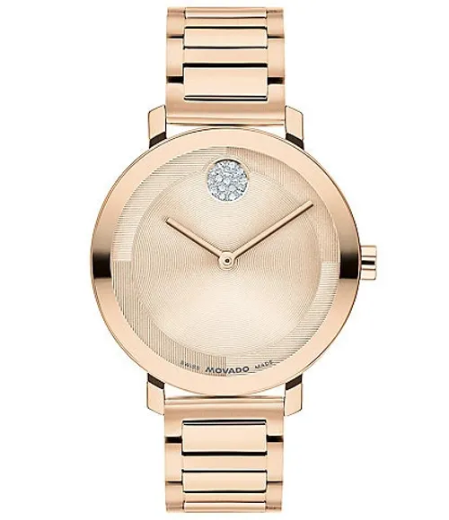

For her
Not smaller men's watches.
The Aurelis was drawn from scratch, with its own movement, proportions and dial. We refuse to shrink a man's design and call it ladies'.

Aurelis / 34 mm
Rose gold, ivory, and very little else.
The dial is sunburst-brushed so it shifts from cream to pale gold as you move. The case sits at 9.2 mm, thin enough to wear all day without noticing it until someone asks.
- Case18k rose gold, 34 mm
- MovementG-04 automatic, 48 hr reserve
- StrapHand-stitched calf, ivory or taupe
- Price$14,200

A gift worth getting right.
Buying for someone else? Our advisors will help you choose, and every watch arrives with a handwritten card if you wish.